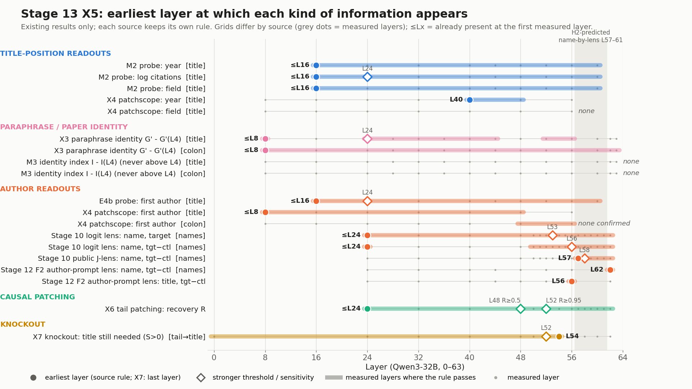

<title>jlens 作者记忆进度汇报</title>
<meta name="claude:viewport-fit-sides" content="cover">
<link rel="stylesheet" href="https://fonts.googleapis.com/css2?family=Noto+Serif+SC:wght@600;700&family=Noto+Sans+SC:wght@400;500;700&family=JetBrains+Mono:wght@400;500&display=swap">
<style>
/* Layout: one reading column (~68ch); findings as a numbered argument; tables scroll inside their own box. */
:root {
  --bg: #F6F8F8; --surface: #FFFFFF; --ink: #17242B; --muted: #55656D; --rule: #D6DEE1;
  --accent: #116466; --accent-soft: #E3F0EF; --warn: #A15C07; --warn-soft: #FBF1E2; --no: #9B2C2C; --no-soft: #F8E7E7; --ok: #2E6B34; --ok-soft: #E6F2E7;
  --display: "Noto Serif SC", "Songti SC", "SimSun", serif;
  --body: "Noto Sans SC", "PingFang SC", "Microsoft YaHei", system-ui, sans-serif;
  --mono: "JetBrains Mono", ui-monospace, "SFMono-Regular", Menlo, monospace;
}
@media (prefers-color-scheme: dark) { :root:not([data-theme="light"]) {
  --bg: #11181B; --surface: #172126; --ink: #E3EBEE; --muted: #9AABB2; --rule: #2C3B42;
  --accent: #5DC2BE; --accent-soft: #163132; --warn: #E6A955; --warn-soft: #33270F; --no: #F08C8C; --no-soft: #3A1C1C; --ok: #8ED29A; --ok-soft: #183019; color-scheme: dark } }
:root[data-theme="dark"] {
  --bg: #11181B; --surface: #172126; --ink: #E3EBEE; --muted: #9AABB2; --rule: #2C3B42;
  --accent: #5DC2BE; --accent-soft: #163132; --warn: #E6A955; --warn-soft: #33270F; --no: #F08C8C; --no-soft: #3A1C1C; --ok: #8ED29A; --ok-soft: #183019; color-scheme: dark }
body { background: var(--bg); color: var(--ink); font: 16px/1.75 var(--body); padding-left: max(16px, env(safe-area-inset-left, 0px)); padding-right: max(16px, env(safe-area-inset-right, 0px)); padding-block: 40px 72px; }
main { max-width: 760px; margin: 0 auto; display: grid; gap: 44px; }
section { display: grid; gap: 14px; min-width: 0; }
h1, h2, h3 { font-family: var(--display); text-wrap: balance; margin: 0; line-height: 1.3; }
h1 { font-size: clamp(28px, 5vw, 38px); }
h2 { font-size: 23px; padding-bottom: 6px; border-bottom: 2px solid var(--ink); }
h3 { font-size: 17px; font-family: var(--body); font-weight: 700; }
p, ul, ol { margin: 0; }
ul, ol { padding-left: 1.3em; display: grid; gap: 6px; }
.eyebrow { font: 500 13px var(--mono); letter-spacing: .06em; color: var(--accent); text-transform: uppercase; }
.meta { color: var(--muted); font-size: 14px; }
.lede { font-size: 17px; }
.thesis { background: var(--surface); border: 1px solid var(--rule); border-left: 4px solid var(--accent); padding: 16px 18px; border-radius: 4px; font-size: 16.5px; }
.num { font-family: var(--mono); font-variant-numeric: tabular-nums; font-size: .93em; }
.tw { overflow-x: auto; border: 1px solid var(--rule); border-radius: 4px; background: var(--surface); }
table { border-collapse: collapse; width: 100%; font-size: 14.5px; line-height: 1.55; }
th, td { text-align: left; vertical-align: top; padding: 9px 12px; border-bottom: 1px solid var(--rule); }
th { font-weight: 700; color: var(--muted); font-size: 13px; background: var(--bg); white-space: nowrap; }
tr:last-child td { border-bottom: 0; }
.pill { display: inline-block; font-size: 12.5px; font-weight: 700; padding: 1px 8px; border-radius: 999px; white-space: nowrap; }
.ok { background: var(--ok-soft); color: var(--ok); } .part { background: var(--warn-soft); color: var(--warn); } .no { background: var(--no-soft); color: var(--no); } .info { background: var(--accent-soft); color: var(--accent); }
ol.findings { list-style: none; padding: 0; counter-reset: f; gap: 18px; }
ol.findings > li { counter-increment: f; display: grid; grid-template-columns: 34px minmax(0, 1fr); gap: 4px 10px; }
ol.findings > li::before { content: counter(f); font: 700 18px var(--display); color: var(--accent); line-height: 1.5; }
ol.findings > li > * { grid-column: 2; }
ol.findings b.claim { font-size: 16.5px; }
figure { margin: 0; background: #fff; border: 1px solid var(--rule); border-radius: 4px; padding: 10px; }
figure img { display: block; width: 100%; height: auto; }
figcaption { color: #55656D; font-size: 13px; padding-top: 6px; }
.links { display: grid; gap: 8px; }
.links a { color: var(--accent); font-weight: 500; word-break: break-all; }
a:focus-visible { outline: 2px solid var(--accent); outline-offset: 2px; }
.small { font-size: 14px; color: var(--muted); }
</style>
<main>
<header style="display:grid;gap:10px">
  <p class="eyebrow">jlens · Qwen3-32B 作者记忆 · 进度汇报</p>
  <h1>模型在哪一层“知道”一篇论文的作者</h1>
  <p class="meta">截至 2026-11-04，Stage 1–13 全部完成（答辩定稿，git tag defense-2026-11）。数字均可在实验记录 v26 和方法手册中追到出处文件。</p>
  <p class="meta"><b>2026-11-06 合并更新：</b>本页与讲稿版《给老师的进度汇报》合并为一个当前版本（加入了讲稿版的“自查中发现并修正的问题”表和“下一步”）；答辩后的结果见下方更新框。讲稿版不再单独更新。</p>
</header>
<section><div  style="border:1px solid #D6DEE1;border-left:4px solid #2E6B34;border-radius:4px;padding:12px 16px;margin:12px 0;background:rgba(46,107,52,.06)"><p style="margin:0 0 6px"><b>2026-11-06 / 11-08 更新：答辩后的重做计划（批次 1 全部结果、批次 2 的 C / D 组补全、报告第 30 版的前提和局限，用户已确认措辞）</b></p><p style="margin:0 0 6px;font-size:.92em">以下数字都来自看结果前写定规则的重做项目（补充 9–14），复现已发表数字是每一项的硬检查。本页其余内容保持原样，后来被更新的说法在原处加了橙色标注，原数字未改。</p><ul style="margin:0;padding-left:1.3em"><li><b>X1–X4 改为全部作者（批次 1 第 1 项，已完成，硬检查 PASS）：</b>X1–X4 改为给全部作者打分（全部名字 token），并按作者排位分层。结论都不变：X1 仍与任务无关，L48 有一点小而确实的任务依赖（作者 − 年份 +0.024 [0.019, 0.030]）；X3 改写标题保留约 90% 的作者偏好，target 与 control 一样；X4 从 L8 起可解码出作者，各作者排位相同，认得出的论文方向上更高，但按预注册在测试集上不显著（L8 +0.023 [−0.001, +0.048]，v42_paper_vs_team.md §3）；但只靠标题文字的基线不弱于 Qwen，仍不能排除标题文字的解释，这一差别不再作为 H2 的证据（只看标题文字的 BERT 基线 +0.088 不弱于 Qwen L8 +0.018）。X2 用全部作者重新拟合作者子空间后，搬动量从 0.016 升到 0.032（完整替换的约 7%），但子空间本身仍几乎解码不出作者（留出 R² ≤ 0.009），H3 仍证据不足。<span style="color:#8a8f98;font-size:.8em">（381_stage13/reports/b1_xall_report.md：X1 节（测试集，作者 − 年份，团队聚类 bootstrap 2,000 次）；X3 behaviour 表（测试集 552 篇，恢复比 0.897 [0.868, 0.926]）；X4 节（L8，全部作者 +0.048 [0.039, 0.058]；Recognition 表）；X2 verdict 表（L48 R_auth）；New S_auth 表（authall_r2 ≤ 0.009）；Hard check 表）</span></li><li><b>E4b 减 5 个假标题（实际每篇可用假标题个数见正文）（批次 1 第 4 项，已完成）：</b>E4b 逐个假标题排除版（偏离 D1，保留 4,654 篇，每篇平均约 1.5 个可用假标题，0–4 个；预注册版只减 false_0、1,395 篇时 L40 姓首 token 为 +0.071）：L40 姓首 token +0.076 [0.068, 0.083]，姓 − 首字母 +0.033 [0.023, 0.042]，逐个排除版（4,654 篇）第一个 token +0.066；原 E4b（1,395 篇）+0.061；置换对照首字母仍 +0.018，其余 ≈ 0；硬检查 E4b L40 +0.0609 PASS。标题位置 probe 的 target − control（同一引用档内）有三个版本：① 预注册版（只减 false_0；false_0 是唯一检查过标题复用的假标题，干净的单一对照；名 1,706、姓 1,395、首字母 1,590 篇）：名的第一个 token L24 +0.051 [0.007, 0.095]、L40 +0.049 [0.005, 0.095]、L48 +0.073 [0.027, 0.122]；姓 L24 −0.002 [−0.037, +0.036]、L40 +0.012 [−0.026, +0.048]、L48 +0.016 [−0.025, +0.056]；首字母 L24 +0.033 [0.005, 0.059]、L40 +0.031 [−0.001, +0.062]、L48 +0.056 [0.025, 0.089]（与补充 9 已发表值相同，e4b_alltok.md）。② 逐个排除版（事后偏离 D1；每篇平均约 1.5 个可用假标题；名 3,046、姓 4,654、首字母 4,812 篇）：名 L24 +0.037 [0.012, 0.062]、L40 +0.048 [0.021, 0.076]、L48 +0.051 [0.023, 0.081]；姓 L24 +0.019 [0.001, 0.038]、L40 +0.030 [0.013, 0.048]、L48 +0.042 [0.025, 0.060]；首字母 L24 +0.026 [0.012, 0.040]、L40 +0.014 [−0.002, +0.030]、L48 +0.031 [0.014, 0.048]。③ "5 个假标题平均"版（仅敏感性参考：论文同①，只按 false_0 剔除，false_1..4 中约 79% 本应剔除（姓的 1,395 篇：4,402 / 5,580；名 42%、首字母 72%；381_stage13/e4b_standardisation_check/v5x0_leak_share.json），含泄漏；名 1,706、姓 1,395、首字母 1,590 篇）：名 L40 +0.047 [0.012, 0.081]；姓 L40 +0.024 [−0.006, +0.052]、L48 +0.031 [0.001, 0.059]；首字母 L40 +0.021 [−0.002, +0.043]。结论：预注册版中名的第一个 token 在 L24–L48 为正，姓在 L24–L48 不显著（L40 +0.012 [−0.026, +0.048]）；事后的逐个排除版中姓从 L24 起为正（L40 +0.030 [0.013, 0.048]）。名的信号在三版中一致；姓的证据弱，只来自事后版本。首字母在个别层为正、模式不一致（未做多层校正），不作结论<span style="color:#8a8f98;font-size:.8em">（381_stage13/summary_b1_e4b5/perdonor_by_run_layer.csv（version = V0 / Vpd / V5x0，列 tc / tc_lo / tc_hi；引用档内 target − control，团队整群 bootstrap 2,000 次 95% CI）；381_stage13/reports/e4b_alltok.md；b1_e4b5_report.md）</span>。</li><li><b>X7 五个假标题（批次 1 第 2 项，已完成）：</b>X7 补做了另外 4 个假标题，按 5 个平均判定，target、control 和全部论文都满足预注册判据（S(L52) 分别为 +0.022、+0.042、+0.028，均 ≤ 0.05）；原来对照组只用 false_0 时为 0.051，属于单个假标题的波动。<span style="color:#8a8f98;font-size:.8em">（381_stage13/reports/b1_x7f_report.md（target 593 / control 593 / 全部 1,186 篇，团队聚类 95% CI））</span></li><li><b>C-3b（补充 13，只作敏感性分析，含泄漏，不作结论）：</b>5 个假标题版本不剔除标题复用：硬检查 PASS；L40 姓的第一个 token +0.077 [0.071, 0.084]，首字母 +0.034 [0.029, 0.039]，姓 − 首字母 +0.043 [0.035, 0.051]（6,841 篇）；target − control 的区间几乎处处在 0 以上，与 C-3 一样。<span style="color:#8a8f98;font-size:.8em">（381_stage13/reports/c13_C3b.md（Primary contrasts at L40 表 V5x0_noexcl 列））</span></li><li><b>P1 / P2 用 5 个假标题（批次 1 第 3 项，已完成，硬检查 PASS）：</b>按补充 10 第 27 行，5 个假标题平均为主结果，原 false_0 版并列。两版所有“5 个假标题平均 − false_0”的区间都含 0，已发表结论不变：论文信息在 L44–L52 汇集到名字位置，注意力在 L48 读入，MLP 在 L52–L56 接手。5 个假标题平均（括号内为 false_0）：P1 全部位置 L48 +0.821 [0.807, 0.835]（0.825）、L52 +0.995 [0.990, 1.001]（0.996）；P1 只换名字位置 L52 +0.841 [0.827, 0.856]（0.847）；P2 注意力 L48 +0.237 [0.229, 0.246]（0.231）；P2 MLP L52 +0.181 [0.174, 0.188]（0.178）、L56 +0.226 [0.217, 0.236]（0.224）<span style="color:#8a8f98;font-size:.8em">（补充 10 第 3 项，Stage 11 样本 1,186 篇，团队整群 bootstrap 2,000 次 95% CI；391_groups/reports/b1_p12f_report.md P1 / P2 表；summary_b1_p12f/p12f_mean5.csv）</span>。p9 位置（标题的右引号；只有共享尾长为 9 的论文，平均每篇约 3 个可用假标题）：各假标题 694–711 篇，集合不同，未加权<span style="color:#8a8f98;font-size:.8em">（summary_b1_p12f/p12f_per_title.csv，item = p9：false_0 708、false_1 694、false_2 711、false_3 707、false_4 710 篇）</span>。“:” 位置的分子 B/A：5 个假标题版 0.72–0.87，false_0 版 0.78–0.99；B 的比例高只因分母约为 A 的一半<span style="color:#8a8f98;font-size:.8em">（P1 只替换 “:”，未写出作者，A 557 / B 586 篇：5 个假标题版 L44 0.72、L48 0.87，分母 B/A 0.51（b1_p12f_report.md “B - A” 表）；false_0 版 L44 0.78、L48 0.99（391_groups/summary_rerun/p1_p2_num_den_B_minus_A.csv））</span>。硬检查：false_0 臂复现已发表值（最大差 2.2e-16），PASS。</li><li><b>C / D 组补全 E1 / E2（批次 2 第 2-6 项，补充 11 B，已完成）：</b>C 组未写出作者 462 篇，同一引用档内与 A 相比（6 个引用档，C 258 篇、A 323 篇）：E1 恢复比例 L48 −0.037 [−0.080, +0.009]，L52 +0.007 [−0.009, +0.024]；L56 −0.007 [−0.014, −0.001]，个别层差异极小，不作解释；E2 阻断损失 L32–L52 区间都含 0。C 的真假标题差距更大：分母 C 0.559 [0.529, 0.590]、A 0.407 [0.386, 0.430]，同档内 C − A +0.075 [+0.024, +0.130]。也就是说，C 的信号更大，但时间点与 A 相同。D（33 篇）按补充 11 只作描述，D − B、C − D 也只作描述<span style="color:#8a8f98;font-size:.8em">（补充 11 B；未写出作者；团队整群 bootstrap 2,000 次 95% CI；391_groups/reports/b2_cd_report.md Numerator / denominator 表与 Contrasts 表；硬检查：重跑 Stage 11 第 0 号分片，差 0.0（容差 0.005），PASS）</span>。前提：同一引用档内只用到 C 462 篇中的 258 篇；分子、分母都只用 false_0；比例差主要反映分母不同（分母效应）。</li><li><b>2026-11-08（报告第 30 版）补充的前提：</b>Stage 8 的结论（真标题让模型更偏好真实第一作者 RQ1；A 组强于 B 组 RQ2）较稳，但有三个前提：① W 只给第一作者名字的第一个 token 打分，在 Stage 8 的 200 篇里有 129 篇（64.5%）这个 token 只是首字母<span style="color:#8a8f98;font-size:.8em">（audit_20261105/part_A_stage4_9.md 第 10 行）</span>；② 偏离 D13-1：按补充 13 C-2 的规则，全部作者 CPU 代理只在 L56 的 RQ2 上与已发表结论不一致（+0.064 [−0.032, +0.163]，区间含 0），触发了按原 W 在 GPU 上重算，用户 2026-11-06 决定不做；在锁定计划的 7 层积分终点上（近似，Stage 10 没有 L16）代理 RQ2 为 +0.046 [+0.007, +0.088]（L16 = 0）或 +0.049 [+0.005, +0.094]（L16 = L24），同向、区间不含 0<span style="color:#8a8f98;font-size:.8em">（381_stage13/reports/c13_C2.md；381_stage13/c13_C2_followup/c2_followup_proxy.csv）</span>；③ U28：L56 在锁定计划里是探索性次终点，10-18 21:14 的 PROTOCOL.md 把它改为主终点，改动者和依据仍未查清。X4 中认得出的论文第一作者 D 更高（测试集不显著）这一差别不再作为 H2 的证据（只看标题文字的 BERT 基线 +0.088 不弱于 Qwen L8 +0.018）。</li><li><b>2026-11-08（报告第 30 版）补充的局限：</b>层不完整：Stage 10 在 L24–L40 每 8 层取一层（没有 L25–L31、L33–L39），没有补层计划（补充 14 只补 L41–L47、L49 和 L0–L23，都在排队）。主要结论的起始层都不在缺口里；落在缺口里的只有三条描述：X4 年份最早可读出层 L40（前一个测量层是 L32，真实起点在 L33–L40 之间）、Stage 10 真标题下 Jacobian lens 从 L40 起明显好于 logit lens（跳变在 L33–L40 的哪一层不知道）、X4 第一作者峰值 L40（真实峰值可能在 L33–L47）。“L24–L48 约为 0”在缺口层没有测过<span style="color:#8a8f98;font-size:.8em">（~/jlens_work/conclusions_v30_checks.md A1）</span>；一致性容差事后放宽，而且用到了：Stage 10 一致性检查的容差在看到结果后从 0.25 放宽到 0.5（用户 2026-10-25 批准）。主轮 25 个（读出 × 层）组合的最大差 0.367，只有按 0.5 才通过；全部名次 < 42 完全一致，名次不一致使 log10(1/名次) 最多变 0.070。原定 0.25 时，Stage 10 主轮一致性检查（12 个上下文、52 个 token 位置）的 25 个 lens × 层组合中有 10 个超出 0.25，最大差 0.367（351_stage10/reports/parity_before_tol05_amendment.json）；3-3 在 7 篇论文的 23,280 行上按 0.25 计 99.81% 在容差内。这一量级与 3-3 查明的 bf16 舍入随前向长度变化（最大约 0.46）一致，但容差是在看到数据后放宽到 0.5 的，属于事后修改。保留在事后改动清单里<span style="color:#8a8f98;font-size:.8em">（351_stage10/reports/parity.json tolerance_amendment；parity_before_tol05_amendment.json；conclusions_v30_checks.md A2）</span>；干预只用了 1,186 篇：E1、E1t、E2、E2n、P1、P2、F2、X6、X7 只用 9,108 篇中的 1,186 篇（target 593 + control 593，每档每组最多 60 篇，10 档），作为局限，不重做<span style="color:#8a8f98;font-size:.8em">（361_stage11/summary/E1_recovery.csv n_papers）</span>；分母效应：恢复比例 = 分子 ÷ 真假标题差距，组间比较受分母影响：C 0.559 对 A 0.407（C / D 组补全）；“:” 位置分子 B/A 5 个假标题版 0.72–0.87、false_0 版 0.78–0.99；B 组比例偏高只因分母约为 A 的一半。C / D 组补全与 P1 / P2 五个假标题的结论都以此为前提；只用 false_0、没有补做计划：M5 B 部分（真标题对 false_0 的标题 / “:” 位置 probe）和 E4b 的 X1 对照流程只用 false_0，没有计划；M2 已不在此列：M2 的假标题运行已补 5 个假标题；标题复用和供体在训练折的排除对每个假标题都为 0 行（exclusion_audit.csv）；另有约 7,240–7,370 行/假标题的供体论文以 target 行出现在训练折中（显示另一篇论文的标题和标签，只有年份在 ':' 之后进入提示），未作为泄漏处理<span style="color:#8a8f98;font-size:.8em">（381_stage13/reports/m2_f5_report.md；381_stage13/summary_m2_f5/M2_f5_mean.csv、exclusion_audit.csv（作业 11747064））</span>；数字核对只覆盖已登记的部分：已登记 680 个结论数字、4,307 处全部一致（第 29 版 h 的核对）；第 30 版新放回或新增的数字已登记进严格核对（claims_defs_v9，结果见核对表）；另约 1,024 个结论性数字未登记（2026-11-07 计数）<span style="color:#8a8f98;font-size:.8em">（351_stage10/reports/numcheck/claims/out_20261108_140102/）</span>。</li><li><b>答辩后已完成、以前写“没做 / 暂停”的项目：</b>X2 只替换子空间（补充 6，2026-11-05）：按预注册判据 H2 不支持、H3 通过，但作者子空间几乎解码不出作者，H3 证据仍不足；全部名字 token 的标题位置 probe（补充 9）：L40 姓的第一个 token +0.071 [0.058, 0.085]；X5 跨问法检索曲线：没有一层高于 L4；M5 能用已有数据回答的部分；CPU 项 C-1 到 C-5（Stage 7.1 加标题对照、Stage 8 CPU 代理、不剔除标题复用的敏感性、M1 换 4 个假标题、Stage 10 附加分析补齐全部已存层）。<span style="color:#8a8f98;font-size:.8em">（381_stage13/reports/x2_report.md；e4b_alltok.md 第 5 节；x5_retrieval.md；m5_report.md；c13_C1.md–c13_C5.md）</span></li><li><b>批次 2（补充 11、12）：</b>批次 1 结束后已由编排作业开始运行：C / D 组补全 E1 / E2（2-6）已完成；2-11 模型自生成名字的首名复现率 0.880 < 0.90，按预注册停止，改为 2-11b（补充 15，已锁定），只跑第 0 个分片，排队中；名字位置 probe 等其余各项进行中，没有可报告的结果（含 Stage 9 Fit B 与 holdout、F1 对半拆分、名字位置 probe 等）；与预注册的出入记在出入记录 D12-1 到 D12-3（2-1、2-2 较省但含原始提示逐位复现重拟合的硬检查；2-11 重建标签、论文内 AUROC、两个基线、对照组只作描述），2-7 的来源改用不含年份的 X4 提示。<b>批次 3（补充 14）：</b>3-1 Stage 10 补 L41–L47、L49，3-2 补 L0–L23：编排作业已提交，第二批全部结束后自动开始（进行中）；3-3 Stage 7.1B 快路径：已停止（偏离 D14-1）：3-3 停止：只有 7 篇论文同时有旧逐前缀结果和快路径结果，不足以确认两者在 ±0.02 内等效（输出层 target−control 差值之差 +0.0059，按论文 Welch 95% CI [−0.0207, +0.0324]；论文级 bootstrap [−0.0005, +0.0181]，因每组仅 3–4 篇偏窄，不作判据）。差异来源为 bf16 舍入随前向长度变化；长度跨档比例 target 28%、control 15%。Stage 10 全程使用快路径，组间口径一致，一致性检查按 0.25 容差（351_stage10.py 第 919 行）通过率 99.81%。决定过程：原判据（≥ 99% 名次完全一致）未通过（79.8%）→ 用户指出事后判据的设计缺陷 → 在看到论文级结果之前写定并锁定修正判据 → 按修正判据（Welch 区间）仍未通过 → 停止；3-4、3-5（Stage 8 按 W 的 GPU 重算）不做。<span style="color:#8a8f98;font-size:.8em">（381_stage13/config/prereg_addendum11.json、prereg_addendum12.json、prereg_addendum12_deviations.json、prereg_addendum14.json；381_stage13/reports/b2_groupA_handoff.md）</span></li></ul></div></section>

<section>
  <p class="lede"><b>研究问题。</b>Qwen3-32B 常常在开放回答里写不出一篇论文的作者，却能在多选题里认出真作者名单。那么作者信息在网络的哪一层形成、经过哪些位置、能被哪种读出工具看到？</p>
  <p class="thesis"><b>一句话结论：读得早，说得晚。</b>论文信息从 L24 起在标题位置逐渐形成，在 L44–L52 进入名字位置（部分经由标题之后的 token）；但作者名字要到 L57–L61 才在名字位置被 lens 读出。“认得出”与“认不出”的论文只在最后几层拉开差距。中间层能读出论文的属性和标题的意思，但没有证明它表示的是“这一篇论文”本身。</p>
</section>

<section>
  <h2>怎么系统地做</h2>
  <p>研究分四条论证线，每条线先在小样本上建立信号、逐一排除替代解释，再在全部论文上复核和干预：</p>
  <div class="tw"><table>
    <tr><th>论证线</th><th>要回答的问题</th><th>小样本（Stage 1–9，20–200 篇）</th><th>全量（Stage 10–13，9,108 篇）</th></tr>
    <tr><td>A 这篇论文？</td><td>信号是否针对这篇论文，而不是名字本身好猜</td><td>5、7.2、7.3、8</td><td>10 标题特异信号；11 名字先验、probe 对照；13 X3</td></tr>
    <tr><td>B 读出工具</td><td>不同读出工具各能看到什么</td><td>3、7.4、8、9</td><td>10 三种 Jacobian lens 与 logit lens；11 线性 probe；12 作者提示 lens；13 M2、X4</td></tr>
    <tr><td>C 哪一层</td><td>信号何时出现、何时被使用</td><td>4、7.2、7.3、8</td><td>10 细层 L50–61；11 替换与阻断；12 P1/P2；13 X5–X7</td></tr>
    <tr><td>D 哪个 token</td><td>名字和提示的哪一部分带有信号</td><td>6、7.1</td><td>10 名字格式与 token 角色；11 标题之后的 token</td></tr>
  </table></div>
  <h3>每一步用的控制</h3>
  <ul>
    <li><b>对照组：</b>“认得出”（target，4,621 篇）与“认不出”（control，2,220 篇）只在多选识别上不同；比较都在同一引用档内做。只用两组都没写对作者的论文（R0）复核，结论不变（输出处 <span class="num">+0.199 [0.188, 0.212]</span>）。</li>
    <li><b>标题特异信号：</b>真标题减去 5 个按领域和长度匹配的假标题的平均，另设“无标题”条件估计名字先验。</li>
    <li><b>因果干预：</b>把真标题运行的表示替换进假标题运行（替换），或从某层起阻断对标题的注意力（阻断）；Stage 13 用另外 4 个假标题重做（X6、X7）。</li>
    <li><b>预注册：</b>Stage 13 的判定规则在看数据前写定（prereg.json + 补充 1–5，均有 sha256）；所有层都报告，不挑层；调参集选、测试集确认。</li>
    <li><b>统计：</b>区间以按作者团队整群重抽的 bootstrap 为主（同名作者的论文并为一组），probe 按团队分折，分折已存档并核对与原始运行一致。</li>
    <li><b>文本基线：</b>用 BERT、TF-IDF、句子向量模型 all-mpnet 检查“只看标题文字能否得到同样结果”。</li>
    <li><b>工程自检：</b>每个 GPU 作业前先在微型随机模型上跑通全流程，再跑一个真实分片；作业内做复现核对（如 X4 按 token 重算与原分数 4,712 个值逐位相同；P2 钩子的完全替换检查逐位恢复）。</li>
  </ul>
</section>

<section>
  <h2>主要发现</h2>
  <ol class="findings">
    <li><b class="claim">真标题有帮助，而且针对这篇论文。</b>
      <p>小样本：L56 真标题比错误标题高 <span class="num">+9.3 pp</span>（Pilot50），在 200 篇新论文上 <span class="num">+5.18 pp [+2.93, +7.48]</span>（Stage 8 冻结设计）。全量：标题特异信号在 L62 约 <span class="num">0.44</span>；名字先验只占目标−对照差的约 0.35（约三分之一），在姓的第一个 token 上约为 0。</p></li>
    <li><b class="claim">“认得出”的优势是真的，但只在最后几层出现。</b>
      <p>引用档内的目标−对照差：中间层约为 0，输出处 <span class="num">+0.21</span>。写对了部分作者的论文（R1）最强，但时间点相同。标题特异信号随引用数单调上升（<span class="num">ρ = 0.451</span>）。</p></li>
    <li><b class="claim">论文信息从 L24 起在标题位置逐渐形成，在 L44–L52 进入名字位置。</b>
      <p>替换标题之后的 token：L48 恢复 <span class="num">0.82</span>，L52 恢复 <span class="num">0.995</span>（5 个假标题平均，各假标题之间相差不超过 0.02）。从 L52 起阻断对标题的注意力，论文特有损失只剩 <span class="num">0.029</span>（control 组 0.051，略高于 0.05 的预注册界线，到 L54–56 降为 0）<span style="color:#A15C07;font-size:.85em">〔2026-11-06 已更新：X7 按 5 个假标题平均，control +0.042，已满足判据；见页首更新框〕</span>。只替换名字位置在 L52 恢复 <span class="num">0.85</span>，只替换 “:” 最多 <span class="num">0.17</span>。注意力在 L48 把标题带进来（<span class="num">0.23</span>），MLP 在 L52–56 接手（<span class="num">0.18、0.22</span>）。</p></li>
    <li><b class="claim">读出工具在中间层读不到“这篇论文的作者”。</b>
      <p>名字位置上，logit lens 和三种 Jacobian lens 在 L24–L48 的标题特异信号约为 0，Jacobian lens 多读出的只是“名字形状”；在作者提示上重新拟合的 lens（Stage 12 F2）也要到 L62 才区分目标组。标题位置的线性 probe 能读出少量论文特有信号（L24 <span class="num">+0.050</span>、L40 <span class="num">+0.061</span>、L56 <span class="num">+0.075</span>，换成随机论文的作者后约为 0；E4b，target + control 1,395 篇，训练折标准化），但它只给名字第一个 token 打分，而这多半是首字母。<span style="color:#A15C07;font-size:.85em">〔2026-11-06 已更新：补充 9 给全部名字 token 打分，L40 姓的第一个 token +0.071；逐个假标题排除版（4,654 篇，每篇约 1.5 个可用假标题）+0.076；见页首更新框〕</span></p></li>
    <li><b class="claim">中间层在标题位置表示论文的属性，在 “:” 位置表示任务。</b>
      <p>标题最后一个 token 上，probe 读出发表年份 R² 从 <span class="num">0.38</span>（L16）升到 <span class="num">0.56</span>，引用数到 <span class="num">0.53</span>，领域准确率约 0.70–0.72，“是否认得出”AUROC <span class="num">0.62–0.67</span>。换问法的对照（M3）显示标题位置的表示不随问法改变，但从不高于 L4（只有文字的层），所以不能说明超出文字；“:” 位置按问题重新组织。跨问法替换（X1）效果与问法无关。</p></li>
    <li><b class="claim">改写标题：中间层表示了意思，但分不出是否“认出了论文”。</b>
      <p>改写后的标题在 L28–L40 比用词相近的另一篇论文更接近原标题（最高 L36 <span class="num">+0.16</span>，超出 L4 文字水平），按预注册判据判为“存在论文身份信号”。事后加的检验把解读降级：只懂语义、不认识作者的句子向量模型在用词匹配的子集上也有相当的优势；中间层优势和行为恢复（约 <span class="num">90%</span>）在 target 与 control 之间没有差别。两者都报告，并记为与预注册的出入。</p></li>
    <li><b class="claim">从论文自己的标题状态，L8 就能解码出第一作者，但可能来自标题文字。</b>
      <p>X4 把标题状态注入中性提示：第一作者 L8 起可解码（<span class="num">+0.046 [0.035, 0.059]</span>，主要在姓上），年份到 L40 才弱弱地出现，领域读不出，与“论文身份先于作者”的预测方向相反。在名的首 token 上，纯文本基线（BERT）不弱于 Qwen，所以不能排除文字解释。</p></li>
    <li><b class="claim">名字内部：信号在姓上，首字母几乎不带信号。</b>
      <p>73% 的作者名以首字母开头，此时信号几乎都在后面的姓上（目标−对照 <span class="num">+0.253</span>，首字母本身 +0.048）；完整的名本身也带信号。</p></li>
  </ol>

  <h3>层序汇总（X5，只用已有结果）</h3>
  <figure>
    
    <figcaption>圆点为按各来源规则最早出现的层，菱形为更严的阈值，灰带为预注册中 H2 预测“lens 读出名字”的 L57–61。图中标签为英文（集群上没有中文字体）。</figcaption>
  </figure>
</section>

<section>
  <h2>三个假设的现状</h2>
  <div class="tw"><table>
    <tr><th>假设</th><th>现状</th><th>依据</th></tr>
    <tr><td>H1 中间层主要表示任务 / 格式</td><td><span class="pill info">在 “:” 和名字位置成立</span></td><td>“:” 和名字位置承载任务；标题位置承载论文属性和超出用词的意思，没有证明是论文身份</td></tr>
    <tr><td>H2 中间层表示“是哪一篇论文”</td><td><span class="pill part">部分支持，未确立</span></td><td>支持：M2 读得出论文属性，X1 替换与问法无关。不支持或分不开：M3 不高于 L4；X3 分不开语义与论文身份；X4 顺序与预测相反；X4 中认得出的论文更高这一差别不再作为 H2 的证据（只看标题文字的 BERT 基线 +0.088 不弱于 Qwen L8 +0.018）</td></tr>
    <tr><td>H3 作者信息已在，只是不在词表方向</td><td><span class="pill no">证据不足</span></td><td>X4 文本基线不弱于 Qwen；只替换子空间的因果检验（X2）没有做<span style="color:#A15C07;font-size:.85em">〔2026-11-06 已更新：X2 已于 2026-11-05 完成，H3 仍证据不足；见页首更新框〕</span></td></tr>
  </table></div>
</section>

<section>
  <h2>各阶段完成情况</h2>
  <div class="tw"><table>
    <tr><th>阶段</th><th>状态</th><th>说明</th></tr>
    <tr><td>Stage 1–6、7.2、7.3、8</td><td><span class="pill ok">完成</span></td><td>Stage 8 冻结主终点复现 +2.33 / +2.41 pp；Holm 校正后只有 L62 显著；无出处的区间已从原始数据重算</td></tr>
    <tr><td>Stage 7.1</td><td><span class="pill part">部分</span></td><td>7.1B 停在 1,166 / 15,519，内容由 Stage 10 覆盖</td></tr>
    <tr><td>Stage 9</td><td><span class="pill part">部分</span></td><td>Fit A 完成；Fit B 停在 66/100，答辩前不补（lens 拟合稳定性只有一份证据）<span style="color:#A15C07;font-size:.85em">〔2026-11-06 已更新：Fit B 与 holdout 列入批次 2，代码已就绪，自动开始；2026-11-08：已在运行，尚无结果；见页首更新框〕</span></td></tr>
    <tr><td>Stage 10、11</td><td><span class="pill ok">完成</span></td><td>全量逐层读出；替换与阻断</td></tr>
    <tr><td>Stage 12</td><td><span class="pill ok">完成</span></td><td>单位置替换、注意力与 MLP 分开替换（钩子显式检查通过）、名字先验、作者提示 lens</td></tr>
    <tr><td>Stage 13</td><td><span class="pill ok">完成</span></td><td>M1–M3、X1、X3–X7 完成；M4 由 Stage 12 完成；M5 并入 X4；X2 暂停未做<span style="color:#A15C07;font-size:.85em">〔2026-11-06 已更新：X2 已完成；M5 的 CPU 部分已完成；X1–X4 已改为全部作者重做；见页首更新框〕</span></td></tr>
  </table></div>
</section>

<section>
  <h2>复核中发现并改正的问题</h2>
  <ul>
    <li>E4b“只用假标题训练、信号反而更强”来自泄漏（同一借出标题同时在训练和测试里）；按团队分折并剔除标题复用后，信号与普通 probe 相当。标准化改为只在训练折内拟合；两种标准化差别最大 0.0007，无结论翻转（381_stage13/e4b_standardisation_check/）。</li>
    <li>M3 的自动判定原来按绝对阈值写成“支持 H2”，不符合补充 2；按规则重判为不支持。</li>
    <li>团队分折在支持 AVX-512 的节点上会不同；核对后所有原始运行与存档一致（点估计差 0），现统一读存档。</li>
    <li>X4 首次逐 token 自检对不上，原因是批大小不同造成的 bf16 舍入；按原批大小重算后逐位一致。</li>
    <li>Stage 8：分析计划在 10-18 14:29 写定锁定（主终点为 7 层积分），同日 21:14 的 PROTOCOL 改为 L56，两者都早于 8C 打分；改动人和理由待查（U28）；git 中没有改动记录。</li>
  </ul>

  <h3>自查中发现并修正的问题（汇总表，来自讲稿版进度汇报第七节）</h3>
  <div class="tw"><table><thead><tr><th>问题</th><th>影响</th><th>处理</th></tr></thead><tbody><tr><td>假标题被重复借用，同一标题出现在训练和测试</td><td>M2 的假标题结果虚高</td><td>作废</td></tr><tr><td>probe 没按作者团队分折</td><td>结果可能偏高</td><td>全部改为按团队分折重跑，结论不变</td></tr><tr><td>一个标题既当真标题又当假标题</td><td>probe 结论可能虚高</td><td>剔除后重跑（剩 1,863 篇），信号仍在；“只用假标题训练信号更强”一说撤回</td></tr><tr><td>置信区间按论文独立重抽</td><td>区间偏窄</td><td>改为团队整群 bootstrap，点估计不变</td></tr><tr><td>Stage 11 替换范围包含名字位置</td><td>“信息存在标题后 token 上”的解释不对</td><td>Stage 12 拆开后改为“进入名字位置”</td></tr><tr><td>替换只用一个假标题、阻断可能搞乱模型</td><td>时间点可能偶然</td><td>X6、X7 补做，结论成立<span style="color:#A15C07;font-size:.85em">〔2026-11-06 已更新：X7 已按 5 个假标题平均重判，三组都成立；见页首更新框〕</span></td></tr><tr><td>Stage 8 分析计划在 10-18 14:29 写定锁定（主终点为 7 层积分），同日 21:14 的 PROTOCOL 改为 L56，两者都早于 8C 打分；改动人和理由待查（U28）</td><td>可能“挑了有利终点”</td><td>补报原定主终点（仍显著）、Holm、逐对剔除</td></tr><tr><td>M3 自动判定没按预注册规则</td><td>H2 被过度支持</td><td>按补充 2 重判为不支持</td></tr><tr><td>X4 文本基线代码错误、阳性对照失败</td><td>H3 被过度支持</td><td>修正后结论反转为“不能排除文字解释”</td></tr><tr><td>几个区间和数字找不到计算文件</td><td>无法复现</td><td>从原始数据重算替换，数值都在原范围内</td></tr></tbody></table></div>
  <p class="small">出处：讲稿版进度汇报（https://claude.ai/artifact/8XcY8CRpz3AAjfDE4n6V6e）第七节；各条的详细记录与出处文件见方法手册附录 G4（V01–V62）和实验全过程汇总（https://claude.ai/artifact/TmqEtZg3gHTz7p7vCkaiB4）第 6 节。本表各行没有逐行列出结果文件。</p>
</section>

<section>
  <h2>局限</h2>
  <ul>
    <li>只用了一个模型（Qwen3-32B，bf16）。</li>
    <li>Stage 7.1B 的终端读出只完成 1,166 / 15,519 个上下文（7.5%）；用 Stage 10 快路径补完的尝试（补充 14 第 3-3 项）因无法确认与旧逐前缀结果等效而停止，7.1B 的估计量不报告。（偏离 D14-1）</li>
    <li>Stage 8 RQ2 在 L56 的结论没有用原统计量复核（偏离 D13-1）。Stage 8 的结论有三个前提：W 只给第一作者的第一个 token 打分（64.5% 是首字母）；D13-1；U28（L56 是后改的终点，原因待查）。</li>
<li><b>层不完整（第 30 版补）。</b>Stage 10 在 L24–L40 每 8 层取一层（没有 L25–L31、L33–L39），没有补层计划（补充 14 只补 L41–L47、L49 和 L0–L23，都在排队）。主要结论的起始层都不在缺口里；落在缺口里的只有三条描述：X4 年份最早可读出层 L40（前一个测量层是 L32，真实起点在 L33–L40 之间）、Stage 10 真标题下 Jacobian lens 从 L40 起明显好于 logit lens（跳变在 L33–L40 的哪一层不知道）、X4 第一作者峰值 L40（真实峰值可能在 L33–L47）。“L24–L48 约为 0”在缺口层没有测过<span style="color:#8a8f98;font-size:.8em">（~/jlens_work/conclusions_v30_checks.md A1）</span>。</li>
<li><b>一致性容差事后放宽，而且用到了（第 30 版补）。</b>Stage 10 一致性检查的容差在看到结果后从 0.25 放宽到 0.5（用户 2026-10-25 批准）。主轮 25 个（读出 × 层）组合的最大差 0.367，只有按 0.5 才通过；全部名次 < 42 完全一致，名次不一致使 log10(1/名次) 最多变 0.070。原定 0.25 时，Stage 10 主轮一致性检查（12 个上下文、52 个 token 位置）的 25 个 lens × 层组合中有 10 个超出 0.25，最大差 0.367（351_stage10/reports/parity_before_tol05_amendment.json）；3-3 在 7 篇论文的 23,280 行上按 0.25 计 99.81% 在容差内。这一量级与 3-3 查明的 bf16 舍入随前向长度变化（最大约 0.46）一致，但容差是在看到数据后放宽到 0.5 的，属于事后修改。保留在事后改动清单里<span style="color:#8a8f98;font-size:.8em">（351_stage10/reports/parity.json tolerance_amendment；parity_before_tol05_amendment.json；conclusions_v30_checks.md A2）</span>。</li>
<li><b>干预只用了 1,186 篇（第 30 版补）。</b>E1、E1t、E2、E2n、P1、P2、F2、X6、X7 只用 9,108 篇中的 1,186 篇（target 593 + control 593，每档每组最多 60 篇，10 档），作为局限，不重做<span style="color:#8a8f98;font-size:.8em">（361_stage11/summary/E1_recovery.csv n_papers）</span>。</li>
<li><b>分母效应（第 30 版补）。</b>恢复比例 = 分子 ÷ 真假标题差距，组间比较受分母影响：C 0.559 对 A 0.407（C / D 组补全）；“:” 位置分子 B/A 5 个假标题版 0.72–0.87、false_0 版 0.78–0.99；B 组比例偏高只因分母约为 A 的一半。C / D 组补全与 P1 / P2 五个假标题的结论都以此为前提。</li>
<li><b>只用 false_0、没有补做计划（第 30 版补）。</b>M5 B 部分（真标题对 false_0 的标题 / “:” 位置 probe）和 E4b 的 X1 对照流程只用 false_0，没有计划；M2 已不在此列：M2 的假标题运行已补 5 个假标题；标题复用和供体在训练折的排除对每个假标题都为 0 行（exclusion_audit.csv）；另有约 7,240–7,370 行/假标题的供体论文以 target 行出现在训练折中（显示另一篇论文的标题和标签，只有年份在 ':' 之后进入提示），未作为泄漏处理<span style="color:#8a8f98;font-size:.8em">（381_stage13/reports/m2_f5_report.md；381_stage13/summary_m2_f5/M2_f5_mean.csv、exclusion_audit.csv（作业 11747064））</span>。</li>
<li><b>数字核对只覆盖已登记的部分（第 30 版补）。</b>已登记 680 个结论数字、4,307 处全部一致（第 29 版 h 的核对）；第 30 版新放回或新增的数字已登记进严格核对（claims_defs_v9，结果见核对表）；另约 1,024 个结论性数字未登记（2026-11-07 计数）<span style="color:#8a8f98;font-size:.8em">（351_stage10/reports/numcheck/claims/out_20261108_140102/）</span>。</li>

    <li>所有结论是教师强制打分下模型对正确作者的偏好，不是自由生成的过程。</li>
    <li>“认得出 / 认不出”的标签来自组里的标注包，生成标签的代码（elm）不在集群上。</li>
    <li>lens 的拟合稳定性只有 Stage 9 Fit A 一份证据；作者提示 lens 没做对半拟合。<span style="color:#A15C07;font-size:.85em">〔2026-11-06 已更新：Fit B 与 F1 对半拆分都列入批次 2；见页首更新框〕</span></li>
    <li>X5 预注册的“跨问法检索”曲线没有计算；X2（只替换子空间）没有做。<span style="color:#A15C07;font-size:.85em">〔2026-11-06 已更新：X5 检索曲线与 X2 都已在答辩后完成；见页首更新框〕</span></li>
  </ul>
</section>

<section>
  <h2>需要确认的问题</h2>
  <h3>请组长确认</h3>
  <ul>
    <li>两次标注运行的 run.json 与 elm 代码版本；多选题是否关闭 thinking、答案位置在哪里。</li>
    <li>panel.py 的名字切分规则；多选干扰团队的抽取规则（年份与人数容差、是否排除共同作者、随机种子）；“et al.” 截断规则；Stage 1 标注运行的配置。</li>
  </ul>
  <h3>需要我自己补的记录</h3>
  <ul>
    <li>Stage 8 主终点从 7 层积分改为 L56 的决定与依据（影响唯一的确认性检验）。</li>
    <li>Exp 1–7 编号来源文档；7.1B 是否有意停止；public lens 的模型与语料版本（需问 Neuronpedia）；Stage 10 冻结版本与运行版本之间的改动。</li>
  </ul>
</section>

<section>
  <h2>待确认与下一步（来自讲稿版进度汇报第九节）</h2>
  <p><b>待确认</b>：</p>
<ul>
<li>向组长确认 6 项标签流程细节（elm 代码和运行记录、多选题 thinking 设置、名字切分规则、干扰团队抽法、et al. 截断规则、运行配置）。</li>
<li>Stage 8 主终点改动的来由，正在查当时的会话记录。</li>
</ul>
<p><b>可能的下一步</b>（希望听取老师意见）：</p>
<ol>
<li>换一个模型复现主要结果，检验“读得早、说得晚”是否普遍。</li>
<li>在模型自由生成时检验，看内部信号能否预测它最终写对还是写错。</li>
<li>设计新的实验区分“认出论文”和“懂得标题意思”，比如用模型不可能见过的虚构论文作对照。</li>
<li>补完 Fit B，加固读出工具的稳定性证据。<span style="color:#A15C07;font-size:.85em">〔2026-11-06 已更新：Fit B 与 holdout 已列入批次 2（补充 12 第 2-1 项），2026-11-08 已在运行，尚无结果；见页首更新框〕</span></li>
</ol>
  <p class="small">“可能的下一步”是建议，没有数据支撑，不是结论。</p>
</section>

<section>
  <h2>材料</h2>
  <p class="small">以下页面都需要登录并获得共享权限才能打开。</p>
  <div class="links">
    <div>实验记录 v26：<span style="color:#A15C07;font-size:.85em">〔2026-11-08 已更新：当前为第 30 版；见页首更新框〕</span><a href="https://claude.ai/artifact/QB335qoaBWvSdFyfvc2bSe">claude.ai/artifact/QB335qoaBWvSdFyfvc2bSe</a></div>
    <div>方法手册（每个数字附出处）：<a href="https://claude.ai/artifact/W7r7xVte3eaNcbo8D8cybo">claude.ai/artifact/W7r7xVte3eaNcbo8D8cybo</a></div>
    <div>合并 PPT v16：<span style="color:#A15C07;font-size:.85em">〔2026-11-08 已更新：当前为 v21；见页首更新框〕</span><a href="https://claude.ai/artifact/XcgK4YF2dYQxudWfhk8MsD">claude.ai/artifact/XcgK4YF2dYQxudWfhk8MsD</a></div>
    <div>PDF 与 pptx 下载：<a href="https://claude.ai/artifact/5Tdt1mQa8xnPiqQEKvjzta">claude.ai/artifact/5Tdt1mQa8xnPiqQEKvjzta</a></div>
    <div>代码与结果：GitHub ZhiQ1/jlens-authorship-recall，tag <span class="num">defense-2026-11</span></div>
  </div>
</section>
</main>
